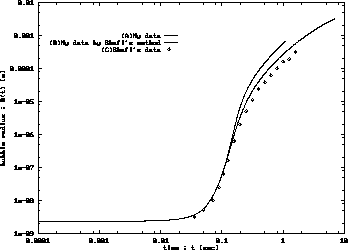
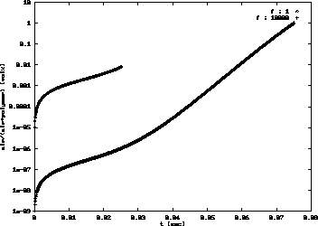

Discussion資料(平成9年4月30日)
ポリマー中の気泡の成長過程のモデリング
はじめに
昨年一年間、高分子プロセッシング(押し出し機)グループのうちの
発泡グループの一員として、発泡機構のモデリングに
関して、文献調査とシミュレーションを行ってきた。
現在、気泡成長シミュレーションと、気泡核生成速度論を組み合わせて、
ポリマー中の気泡の半径分布、ならびに空隙率を求めんとしているところである。
この方法論について、説明したい。
単一気泡の成長シミュレーション
状況として、減圧によって溶解ガスが過飽和状態となったポリマー融液と、
その中に浮かぶ、核生成済の一気泡を想定する。
ガスは極めて高い圧力P(D)0(通常数10気圧〜100気圧)で、融液に溶解させ、
その後、P(C)(ほぼ大気圧)に減圧する。
気泡の内圧は、周辺の融液中の溶解ガスの濃度と平衡な圧力を発生時の初期値とする。
ゆえに圧力解放時刻に核生成した気泡の内圧はP(D)0と等しくなる。
単一気泡成長モデルは、主に次の３式から構成される。
気液界面の運動方程式
気泡の気液界面は、内圧(P(D))が、外圧:雰囲気圧(P(C))+表面張力と
つりあっていない場合、半径方向に移動を始める。これは次のように表される。
4η(dR/dt)/R = P(D)- P(C) - 2γ/R
R:気泡半径、η:粘度、γ:表面張力を示す。
ここで、右辺の値が 0 となるような、気泡半径を臨界半径 Rcと定義する。
一般に、これより半径が大きいと成長、小さいと収縮する。
Shafiは、この臨界半径の約1.1倍をもって、気泡の初期径としているが、
そのオーダーは、2.1ナノメートルと極めて小さい。
それに対し、Patelは、臨界半径とは関係無しに、ミクロンオーダーの
値を適当に設定しているようである。当研究では、Shafiに従っている。
ポリマー融液中の溶解ガスの気泡内への流入
気泡内のガスの物質収支式が次のように立つ。
(d/dt)( P(D)・(4π/3)R3/RgasT)
=
4πR2D(∂c/∂r)|r=R
Dは拡散係数、c はポリマー融液中の溶解ガス濃度、Rgasはガス定数、
Tは絶対温度(今回定数)、rは半径座標を示す。
左辺は、気泡内のガスモル数の時間変化、右辺は気液界面を通じて拡散流入する
ガスモルを示す。
周辺ポリマー中での、溶解ガスの拡散対流方程式
気泡周辺のポリマー融液上の球殻 : r〜r+Δrにおける、融解ガスの
物質収支を考える。このガスの移動は
- ガス自体の拡散による移動
- 溶媒ポリマーの移動に伴う移動。
の和で表される。後者の移動量は、同球殻での融液の物質収支式 :
(∂/∂t)(4πr2Δrρ)
= 4πr2vrρ|r=r
- 4πr2vrρ|r=r+Δr
と、気泡気液界面での境界条件 :
vr|r=R = dR/dt
を解くことで得られる対流速度 : vr = (dR/dt)R2/r2を使って、
4πr2Δr vrc と表現できる。
これと拡散方程式を組み合わせた「対流拡散方程式」は次のようになる。
(∂/∂t)(4πr2Δr c)
= -4πr2D(∂c/∂r)|r=r
+4πr2D(∂c/∂r)|r=r+Δr
+4πr2vrc|r=r
-4πr2vrc|r=r+Δr
これのΔr→0の極限は次のようになる。
(∂c/∂t) = (D/r2)(∂/∂r)[r2(∂c/∂r)]
- [(dR/dt)/R2]/r2×(∂c/∂r)
さて、この対流拡散方程式は、素直に実装した場合、
メッシュの数だけ連立させなければならず、
複数の気泡成長をシミュレートする場合、消費する計算機のパワーは尋常ではない。
そこで、最近は 次に示す Integral Method(積分法)を用いて、
計算を簡略化する手法がメジャーとなっている。
Integral Method
Integral Method とは、気泡周辺の(濃度)境膜の濃度分布を、適当に決め打ちしてやる方法である。
まず、変数を次のように置く。
| c∞ | P(D)0に平衡な濃度 |
| cR | 気液界面での濃度, P(D)に平衡 |
| R | 気液界面の半径座標 |
| S | 境膜外面の半径座標 |
S は厳密には、次のように定義される。
S = inf s (r ≧ s : c(r)=c∞)
つまり、Sより外側では気泡成長運動による濃度の下降が一切ないものとする。
Shafiなどは、この境膜上に次のような濃度プロファイルを設定している。
[ c(r)-cR ]/[ c∞ - cR]
= 1 - [ 1-(r3 - R3)/(S3 - R3)]4
Patelは、より簡単に
[ c(r)-C_R ]/[ c∞ - cR ]
= 1 - [ 1 - (r-R)/(S-R)]2
としている。
さて、以上のようにプロファイル関数を設定したが、
境膜厚み(S-R)が未知では机上の空論となる。
これは、気泡内で増加したガスモル量は、周辺ポリマー融液中で失われた
溶解ガス量に一致することに注目して、次の式から求めることができるはずである。
(c∞-cR) ∫SR
([c∞-c(r)]/[c∞-cR]4πr2dr
= (4π/3)(R3ρG - R03ρG0)
ρGは気泡中のガスの質量密度、ρG0はその初期値である。
これより、原理的には、気液界面での濃度勾配がでるので、
式(\ref{eq:molebalance})を解くことができるはずである。
結果

図 1 : 最初の10秒間の成長(EPS-file)
実線の(A)はメッシュを使った方法、点線の(B)はIntegral Methodを使った方法である。
◇の(C)は Shafi の示す文献値である。
メッシュは気液界面の外側に100個程とったものだが、単独の成長を見る限りは、
Integral Method でも遜色がないといえる。
気泡の径分布を求める
核生成速度理論
Suhらによると、今、単位体積・単位時間あたり気泡の発生速度
Js[bubbles・m-3・s-1]は、
次のようにで表される。
Js = dN/dt = C∞fexp(-ΔG*/kBT)
= C∞fexp[(-16πγ3)/(3kBT(P(D)-P(C)2))]
γはポリマー融液と気泡との界面に生じる表面張力[N/m]、
kBはボルツマン定数、
C∞は周辺のポリマー融液中で過飽和状態になっている溶解ガスの濃度 [mol/m3]。
ΔG*は、核生成:半径 0 の気泡が半径 r の気泡になる時の自由エネルギー変化 :
ΔG = -(4π/3)r3(P(D)-P(C)) + 4πr2γ
の初期気泡半径 r に対する極大値であり、
核生成に必要な活性化エネルギーと解釈できる。
fは頻度因子と呼ばれるもので、105とSuhは与えている。
この数値の与え方に関しては今後の文献調査によって明らかにしたい。
以下、加圧解放時刻をt=0とする。
この時点では、ポリマー融液全体が均一に濃度 C0で過飽和状態になっている。
今、t>0の任意時刻において、
全ポリマー領域を、気泡核が生成できる領域と、そうでない領域の二つにわけるものとする。
この分け方にも色々あるが、Shafi\cite{Shafi}は単純に濃度Cs = 0.96C0より大きいか小さいかをその基準
とした。この濃度Csは、さきの式で、ちょうど、核生成速度が初期濃度の時の
それの 1/100 になる濃度である。
系の気泡径の分布を調べる
気泡径分布を求める時刻tよりも過去である、ある時刻t'での
ポリマー融液の領域全体の核生成可能領域全体の大きさを
VL(t') [m3]とおくとその時に発生する気泡の数は
nb(t') = VL(t')Js(t') [bubbles/sec]
と表せる。
以下、同時刻に核生成した気泡は、全て同じ径をもつとして話をすすめる。
今、時刻 t'に発生した気泡一つが、時刻tにおいて抱えている
核生成不能領域の大きさを Vs(t,t') [m3/bubble]と表すものとする。
このVs(t,t')は、t'における核生成可能領域の平均濃度を、
初期値として、前節の式に与えてやることで求めることができる。
これだけで、その時点での気泡径分布を求めることができるが、
次の時刻t+Δtでの分布も出すためには、
現時刻tで発生する気泡核数nb(t)とそれらの初期条件も用意しておいてやらねばならない
(このままでは 時刻t=0の時の結果しか出ず、意味がない)。
今、t'〜t'+Δt'に発生した気泡全てが
時刻tにおいて抱えている核生成不能領域の大きさは、
VL(t')Js(t')Vs(t,t') [m3/sec]
となる。これを圧力解放時から現在まで、つまり、t' = 0〜tについて積分すれば、
系のtにおける核生成不能領域の全体積を求められる。
より、体積の引き算から、核生成可能領域の大きさは
VL(t) = VL(0)
- ∫t0 VL(t')Js(t')Vs(t,t')dt'
- VD(t)
と求められる。
VDは、外界への拡散によって減少した核生成可能領域の大きさで、
導線被膜ポリマーの場合、円筒状のshellで拡散方程式を
立てて、Cs以下の領域を計算すれば求められる(今回はVD=0の結果のみ)。
次に、単位体積あたりの核生成速度Jsを出す為に、
そして、気泡成長計算の初期値を与えてやる為に、
核生成可能領域の平均の溶解ガス濃度(C∞ ≦ C0)を求める。
これは、次の物質収支式で求めることができる。
| C∞ VL |
= C∞ VL(0)
- ∫t0 (4π/3) Js(t')VL(t')
[P_D(t,t')R3(t,t')]/[RgT]dt'
|
|
- ∫t0Js(t')VL(t')
∫S(t,t')R(t,t')4πr2c(r,t,t')dr
dt |
| -(外界への拡散量) |
R(t,t')は時刻t'に発生した気泡の時刻tにおける半径、
S(t,t')は同気泡の周辺ポリマーの溶解ガス濃度がC=Csとなる半径を示す
(前節のSと違います)。
以上の計算を繰り返すことで、核生成可能領域が0になるまでの気泡径分布を
計算することが可能になる。
気泡径分布が分かると、これからポリマーの空隙率も計算できる。

図 2 : 空隙率変化 (EPS-file)
「f:1」は、通常の頻度因子fの値、「f:10000」は、fを1/10000にしたものである。
曲線は途中で途切れているが、ここで、核生成可能領域が 0 になり、
気泡中への拡散がほぼ停止することになっている。
拡散が終了した後の成長は、本来、三つの基本式で拡散を0としたものに切り替えて、
計算すべきなのだが、ここでは
(拡散停止時の気泡内圧)×(拡散停止時の気泡体積)＝(大気圧)×(成長停止時の気泡体積)
の関係から、最終的な気泡径だけを簡単に求めてみた。
| 外部拡散 | 無し | 無し | 有り | 有り |
| 頻度因子 f の比 | 標準(1) | 1/10000倍 | 標準(1) | 1/10000倍 |
| 拡散過程終了時の気泡の最大半径 | 5.628×10-9m |
6.636×10-7m | 3.590×10-9m | 1.145×10-8m |
| 同空隙率 | 0.007 | 1.01 % | 0.001 | 2.6×10-6% |
| 拡散終了時刻 | 0.025秒 | 0.075 秒 | 0.017秒 | 0.03 秒 |
| 最終的な最大半径 | 4.27×10-8m | 4.59×10-6m |
2.726×10-8m | 8.702×10-8m
|
| 同空隙率 | 3.33 % | 78.4 % | 0.44 % | 0.00115846 % |
空隙率は (空隙体積)／(空隙体積+ポリマー体積)×100 [%]である。
この結果は、実際の導線被膜樹脂の断面に写っている気泡のサイズと大きくことなっている。
気泡が大きく育たないのは、本モデルでは核生成を均質系としているのに対し、
皮膜樹脂は核剤が含まれた不均質系であるため、
核生成速度式が不適当、つまり、モデルは核を発生しすぎであるからだと考えられる。
そのため、微小な大量の気泡核だけで、ガスが全て消費される結果になっている
(微細な気泡が多いという点においては、均質系発泡の特徴とは合致する)。
最後に
今後の予定としては、不均質系核生成に改めるのはもちろんとして、
導線被膜樹脂の流れによる膨張も考慮にいれた、大気へのガス拡散モデルに
発展させていきたい。
参考文献
- Shafi,A.Muhanmad, J.G.Lee, R.W.Flumerfelt,
"Prediction of Cellular Structure in Free Expansion
Polymer Foam Processing",
Poly.Eng.Sci. 36, pp.1950--1959(1996)
- Patel,R.D.,
"Bubble growth in a viscous Newtonian liquid"
Chem.Eng.Sci. 35, pp.2356-- (1980)
- Colton,J.S.,N.P.Suh,
"The Nucleation of Microcellular Thermoplastic Foam With
Additives: Part I:Theoretical Considerations",
Poly.Eng.Sci. 27, pp.485--492(1987)